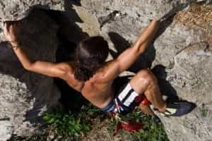

David is a strength coach and bestselling Men's Health author. You can follow him at HowToBeast.com.


In The Way of Men, Jack Donovan writes about what it means to be a man.
He postulates that it comes down to embodying four key masculine virtues: strength, courage, mastery, and honor.
These are the virtues that made men the most “successful” in primal tribe-based cultures based in warfare and survival—and they translate to modern society as well. While there are a lot of important traits for men to embody, these are probably the top four that make us most respected by other men, and desired by women.
In this article I’ll focus on offering a set of hobbies that serve to assist you in cultivating the first three: strength, courage, and mastery. I only leave out honor because I believe it’s a much harder beast to conquer—it requires true character development and cannot be “hacked” as easily as the first three.
Physical strength is possibly the biggest difference between man and woman. Mental strength, and being able to persist in the face of adversity is arguably an even more accurate predictor of the coming success or failure of an individual.
Courage means being able to press on in spite of the presence of risks. Without courage, a strong man is effectively neutered, because his strength, be it physical or mental, cannot be applied in stressful or risky situations. And, at the end of the day, heroes are made on the battlefield, not inside the comfort of their own home.
Mastery can mean a myriad of different things, but here it most closely resembles becoming extremely proficient in a particular discipline. The act of applying yourself in a dutiful manner to improving your craft, whatever it may be, is a journey that builds character. It is also an essential part of being your own man,
While there are a number of ways to enhance your sense of masculinity, practicing the following hobbies can be a powerful way to speed up this process.

Learning a martial art is a grueling process.
Whether you pick Muay Thai or Brazilian Jiu-Jitsu—and those are my two recommendations—you will be forced to learn a number of challenging techniques that feel completely unnatural at first. This builds your sense of mastery, as well as your mental strength, because, believe me, it takes persistence to stick with a martial art and get past the steep initial learning curve.
But more important is the tremendous amount of courage you’ll develop when you spar (and potentially compete) in either of these disciplines. Stepping in the ring against someone who’s trying to hurt you is a real risk, and proceeding in spite of this is courageous.

While the physical strength benefits of some sports are obvious, the mental strength developed through competing is often ignored. Moreover is the sense of masculine camaraderie that’s developed when playing a team sport. I recommend pickup basketball and paintball as two solid sports for guys to start practicing in order to develop these traits.
You’ll also enjoy them immensely.
When it comes to building physical strength, nothing can compete with the “big three”: squats, deadlifts, and bench press. Increasing your strength in these lifts will make you strong. Simple as that.
However, be sure you’re doing them with proper form, otherwise injury is likely.
While improving your performance in the gym also builds a sense of mastery, I’d like to note that it does little for your courage. “Weights don’t fight back,” as a good friend of mine used to say.

While not as “manly” as its large-scale mountain counterpart, rock-climbing gyms are becoming more and more prevalent today. Holding – and lifting – your bodyweight up a long vertical climb is a sure-fire way to develop strength, in your grip and back.
And although you’re usually harnessed in for safety, there’s an undeniable rush that you’ll experience as you make your way higher and higher. And progressing to free-climbing takes the courage necessary to succeed up a notch.
The final hobby I recommend you adopt is “cold approach” pickup. This simply means approaching women you don’t know, whether it’s on the street, at the store, or in the bar, in hopes of setting up a date with her.
This primarily enhances your courage, because we’ve been socially conditioned to fear making such advances. Doing so repeatedly can break through this social conditioning and allow you to realize that there’s no real risk involved.
I suggest simply being straightforward and blunt in your approaches, because this takes bigger balls—and is arguably more effective—than using some roundabout maneuver.
Read More: 6 Habits That Hold Men Back